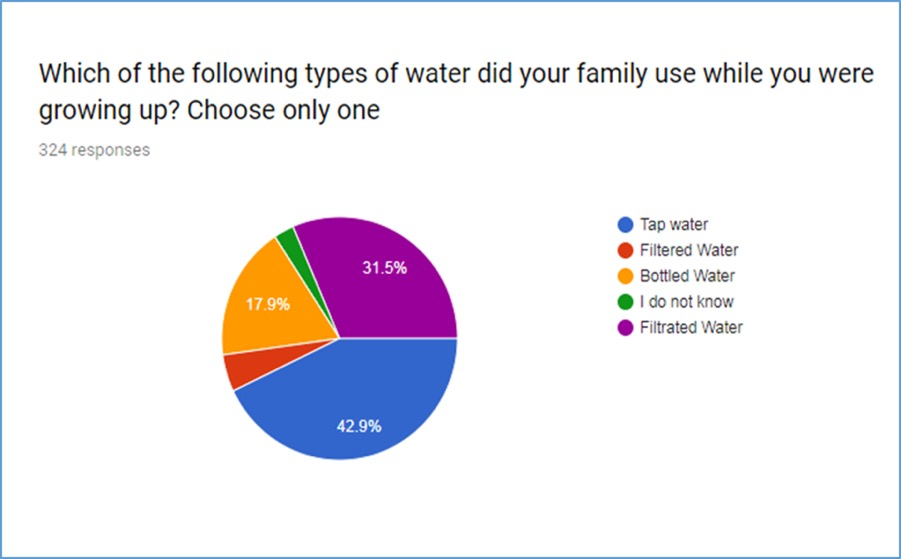
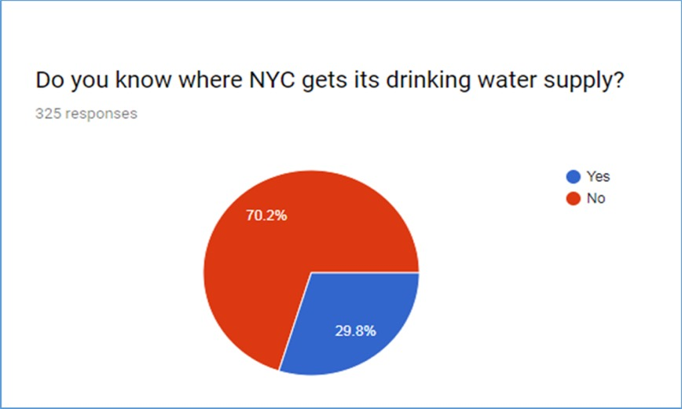

DISCUSSION
What should we know about New York waterThe water content in children and adolescents is higher than that in adults, their metabolism is faster, and their demand for water is more than that of adults. it may lead to health hazards for children and adolescents. NY Tap water is treated with natural water sources, and its quality meets American drinking water standards. According to the parameters of health and domestic water, the environmental water source in New York is very nutritious. The data of various parameters show that it meets the national standard for drinking directly. This is inseparable from the close investigation of the water department. Especially in schools, drinking fountains have been added to make it very easy for every teenager to get healthy drinking water. To ensure their health in the physiological growth stage.
 Influencing factors of drinking habitsThe latter can be roughly classified Three categories:
(1) Pre-factors refer to the formation of behavioral habits before the formation of behavioral habits and for behavior’s factors that provide the basis and motivation, which trigger the actor to produce the realization of a certain A desire to act. For example, drinking water and health-related knowledge, drinking water Behavior values and attitudes, etc.
(2) Promoting factors: referring to realization Personal skills and resources required for behavior, which provide actors with the realization Conditions for this behavior, such as life stress, family income, beverages
(3) Reinforcement factors: referring to feedback through behavior.
Determining whether the behavior is persistent or suspended can be divided into positive reinforcement. Factors and negative reinforcement factors. Among them, rewards, incentives, and actions. Supporting factors are positive reinforcement factors, such as regional culture and media coverage. Punishment, objection, and additional costs are negative. Chemical factors, such as the increase in beverage prices. These three types of psychosocial factors. They are not mutually exclusive, such as mothers ‘perception of drinking habits and nurturing children. Children's drinking behavior is a pre-factor when children accept it. After the behavior, it mainly plays the role of reinforcement factors.